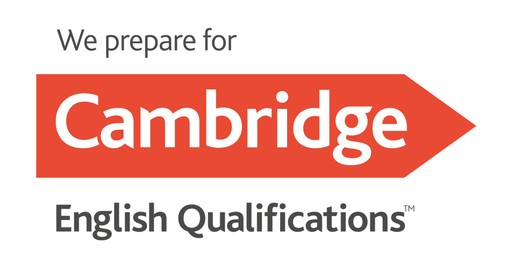

F1 · Pre-A1/A1
Começar3º ano
Versão visual e curta, com leitura conservadora.
Escolha sua série para acessar a avaliação digital de nivelamento. Os dados da escola e da série serão preenchidos automaticamente para ajudar no acompanhamento pedagógico.

As avaliações foram organizadas por segmento e série. O 4º e o 5º ano compartilham a prova-base F1, com leitura de resultado adequada a cada ano.
Versão visual e curta, com leitura conservadora.
English Quest: School Day Challenge.
Mesma prova-base, com leitura por série.
English Quest: Global Challenge.
English Quest: Global Challenge.
English Quest: Global Challenge.
English Quest: Global Challenge.
Validação interna: ver simulação de visualização da coordenação